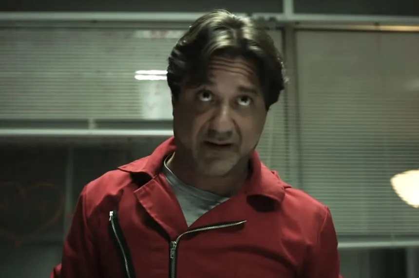

Arturo - The Troublemaker
Arturo, portrayed by Enrique Arce, is a polarizing character in "Money Heist."
His presence in the Royal Mint of Spain heist adds a layer of tension and
conflict to the narrative. Arturo's character is marked by selfishness,
opportunism, and a desire for control, making him a troublesome figure
within the group. Despite being a hostage, Arturo's actions create
challenges for both the gang and fellow hostages. As the series progresses,
Arturo's character becomes a symbol of the darker aspects of human nature
amidst the intense circumstances of the heist, showcasing the complexities
of morality and personal motivations in the world of Money Heist.